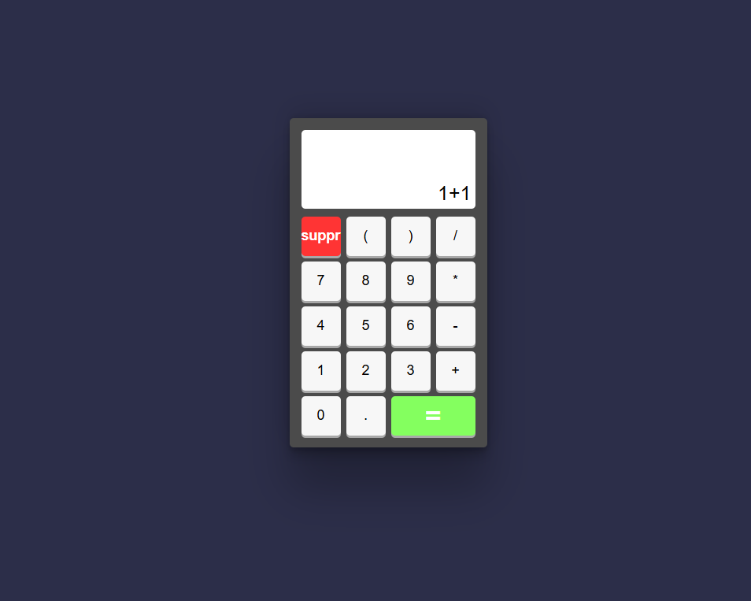
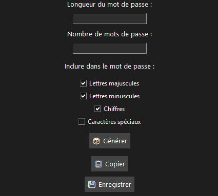
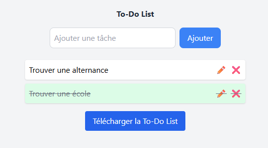
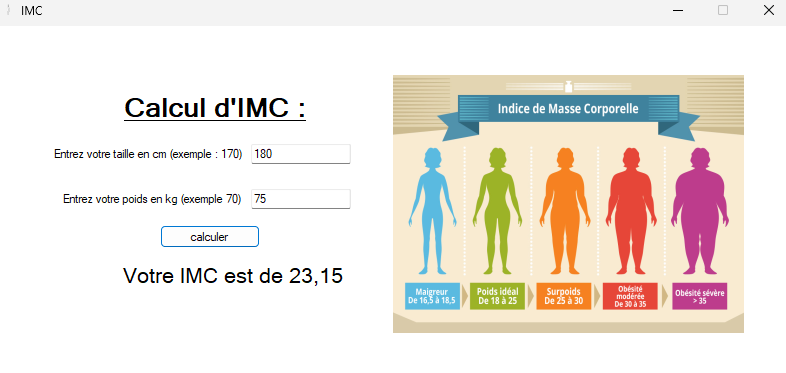
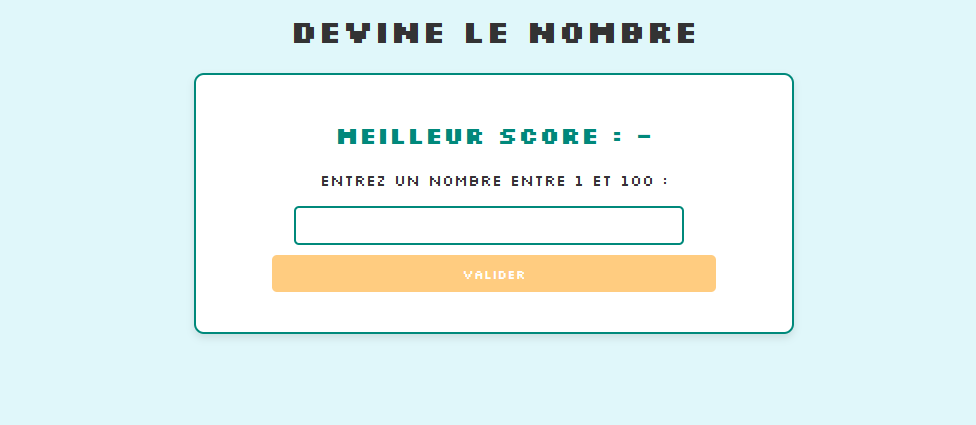
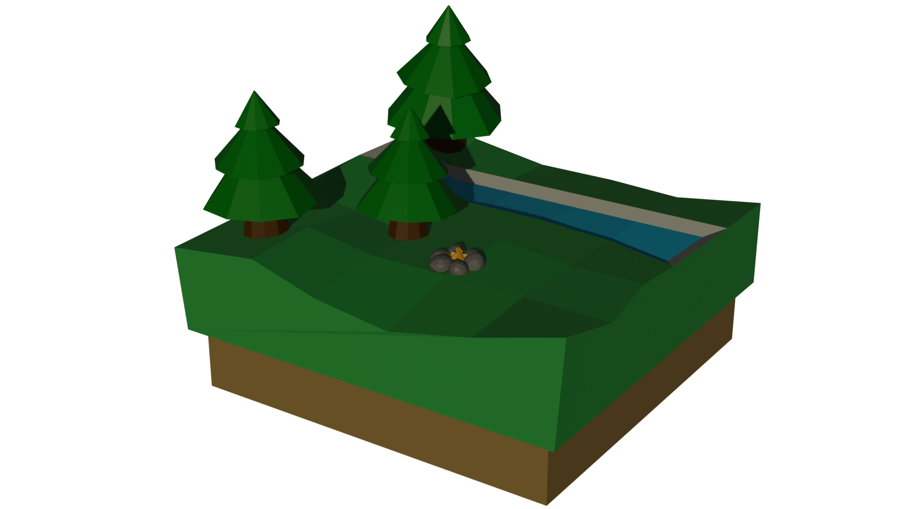

Mes Projets
Application GSB
▼
Développée dans le cadre de mon BTS SIO en PHP suivant le modèle MVC, cette application, reliée à une base de données MySQL, permet de gérer, afficher et modifier des données médicales de manière fluide et sécurisée.
Calculatrice interactive
▼
Une calculatrice moderne développée en HTML/CSS et JavaScript, exploitant le DOM pour gérer dynamiquement les interactions, idéale pour effectuer des opérations simples dans une interface claire et responsive.
Générateur de mots de passe
▼
Un outil en Python doté d'une interface graphique simple avec Tkinter, permettant de générer rapidement des mots de passe personnalisés selon vos critères (longueur, types de caractères, quantité), avec possibilité d'enregistrement automatique dans un fichier texte.
To-Do List Téléchargeable
▼
Une application web simple, pratique et intuitive permettant de gérer vos tâches quotidiennes. Développée en HTML, CSS (Tailwind) et JavaScript, elle offre la possibilité d'ajouter, modifier, supprimer des tâches, et surtout de télécharger votre liste au format texte pour la conserver ou la partager facilement.
Application de calcul d'IMC
▼
Cette application en Winforms C# calcule automatiquement votre IMC à partir de votre taille et poids, et vous indique votre catégorie (normale, surpoids, etc.) via une échelle graphique intuitive.
Devine le nombre
▼
Un mini-jeu en HTML/CSS et JavaScript où vous devez trouver un nombre entre 1 et 100. À chaque tentative, une indication vous guide pour affiner votre réponse. Simple, rapide et efficace pour s'entraîner en logique !
Modélisation 3D
▼
En autodidacte, j'ai commencé à explorer Blender pour apprendre les bases de la modélisation 3D. J'ai réalisé quelques petits modèles simples (objets, formes stylisées) afin de me familiariser avec les outils de sculpture, de texturage et de rendu.